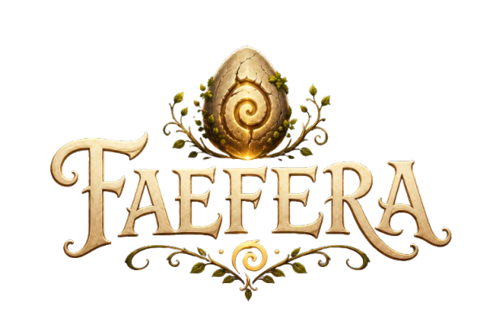
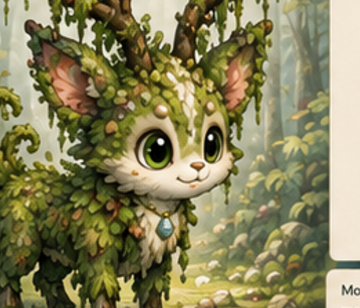
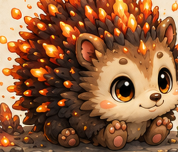
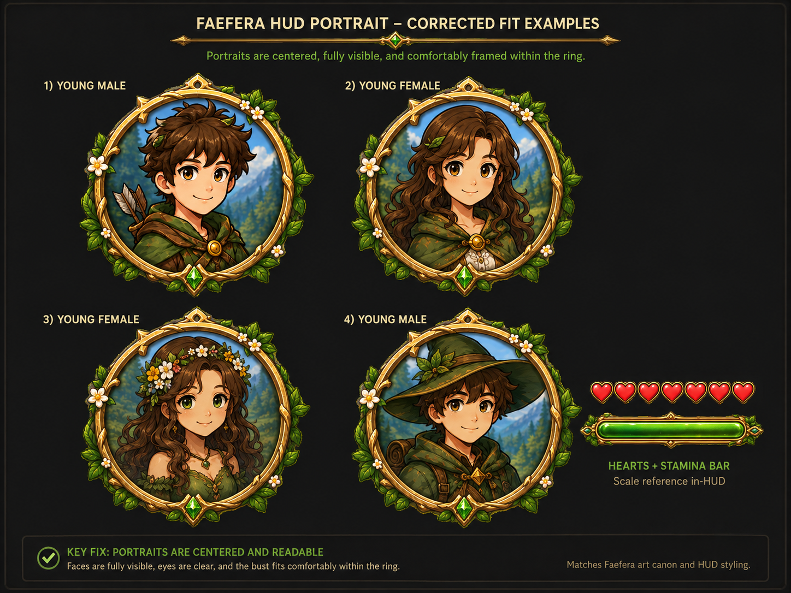
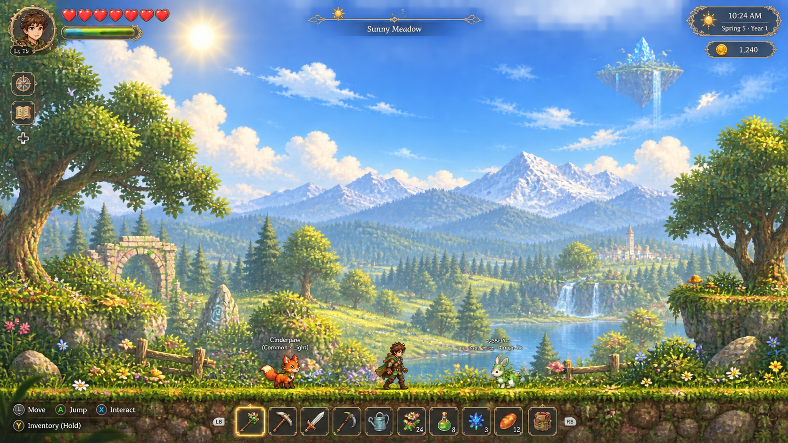
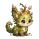
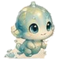
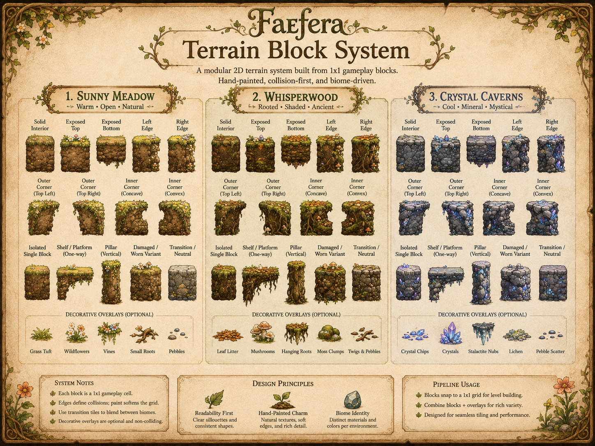

A cozy fantasy adventure about hidden eggs, magical baby companions, building a place of your own, growing a garden, crafting from the world, and discovering what waits beyond the next hill.
Pre-alpha · Godot · active development
A gentler kind of adventure
Begin with an egg. Build a home. Let the world unfold.
A new adventure starts by choosing one of four mysterious starter eggs. The others are not deleted or spoiled; they become hidden discoveries somewhere in the world. Your first goal is simple: gather what the meadow gives you, make a shelter, and create the right conditions for your egg to hatch.
There is no traditional combat loop. Progress comes from exploration, building, gardening, crafting, trading, caring for creatures, and learning how the world fits together.


Your adventurer
Create a fae explorer that actually looks like yours
The character creator is built around the Faefera avatar art canon: male- and female-presenting bases, hairstyles, outfits, cloaks, shoes, accessories, palettes, and layered parts that combine into the in-game adventurer.


Discovery should feel magical
Eggs wobble, crack, hatch, and become somebody
Eggs are discoveries, not menu unlocks. When the right conditions are met, the egg comes alive with a wobble-and-hatch sequence, revealing a baby creature the player can name. Names across players, creatures, and other player-authored fields are designed to stay kid-friendly.
The same creature families can appear later as hidden eggs, rare finds, or things a visiting merchant may offer — giving exploration and currency a reason to matter.


Companions, not combat units
Every baby Faefera should change how you play
Creatures are useful because of who they are. Their elemental families can help with everyday tasks and exploration, but assists consume energy. Rest, care, and bonding matter; they are not unlimited tools you can spam forever.
One connected world
From the Sunny Meadow to everything beyond it
The demo is deliberately focused on one biome so its first loop can be finished properly. The full game is planned to expand into forests, winter regions, root-filled underground spaces, crystal caverns, magma depths, and floating islands overhead.
Parallax scenery, biome transitions, day-and-night atmosphere, darker unexplored spaces, environmental lighting, and a camera that opens up outdoors are being built to make the world feel continuous rather than stitched together.
Build it your way
A cozy sandbox where resources have a reason to exist
Gather materials, build shelter, furnish a shop, grow food, craft useful objects, and sell what you make to visiting NPCs. Currency is meant to feed back into discovery: merchants can offer resources, rare eggs, useful items, and conveniences that help the player keep expanding.
Environmental hazards — falls, lava, freezing regions, and similar dangers — are the main sources of damage. Food and healing items restore health and are consumed when used.

Development status
The demo comes first
Faefera is in active pre-alpha development. The first public-facing goal is a cohesive PC demo centered on the Sunny Meadow, the starter-egg and shelter loop, gathering, building, gardening, companion care, exploration, and the magical interface that ties it together.
There is no Faefera Steam page or trailer yet. Those will be created after the demo is ready to represent the game properly. Localization across multiple languages is planned; the final supported-language list will be confirmed before release.